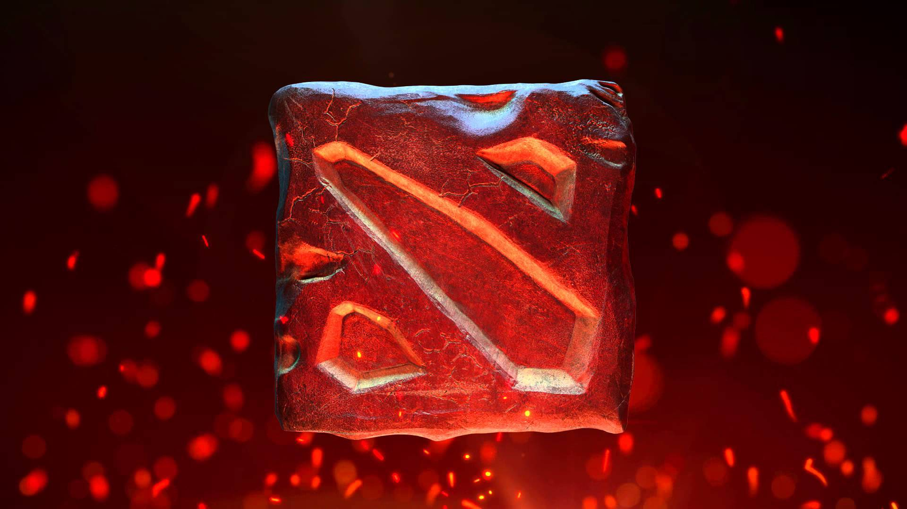

Dota 2 — компьютерная многопользовательская командная игра в жанре multiplayer online battle arena, разработанная корпорацией Valve. Игра является продолжением DotA — пользовательской карты-модификации для игры Warcraft III: Reign of Chaos и дополнения к ней Warcraft III: The Frozen Throne. Игра изображает сражение на карте особого вида; в каждом матче участвуют две команды по пять игроков, управляющих «героями» — персонажами с различными наборами способностей. Для победы в матче команда должна уничтожить особый объект-«крепость», принадлежащий вражеской стороне, и защитить от уничтожения собственную «крепость». Dota 2 работает по модели free-to-play с элементами микроплатежей.
